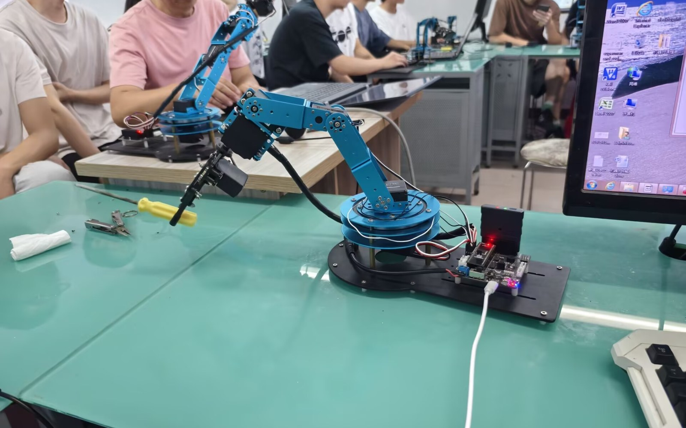
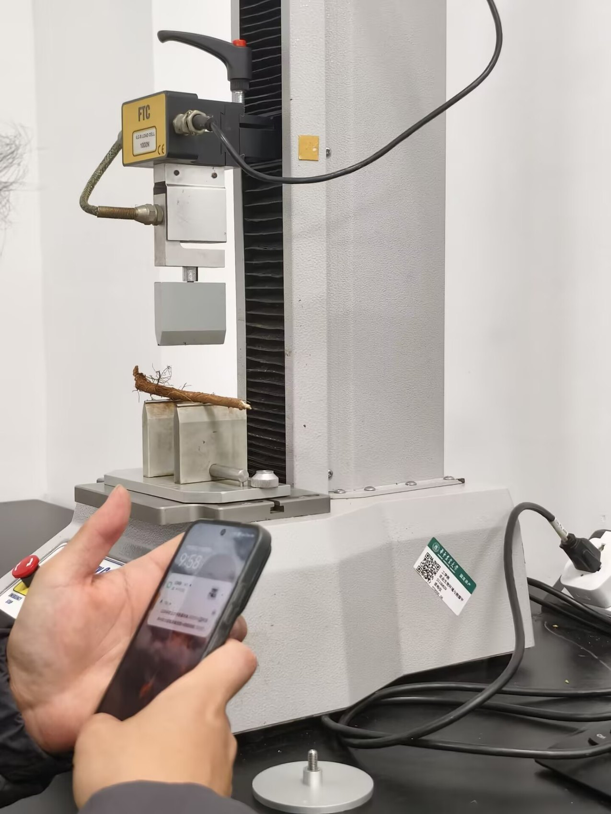
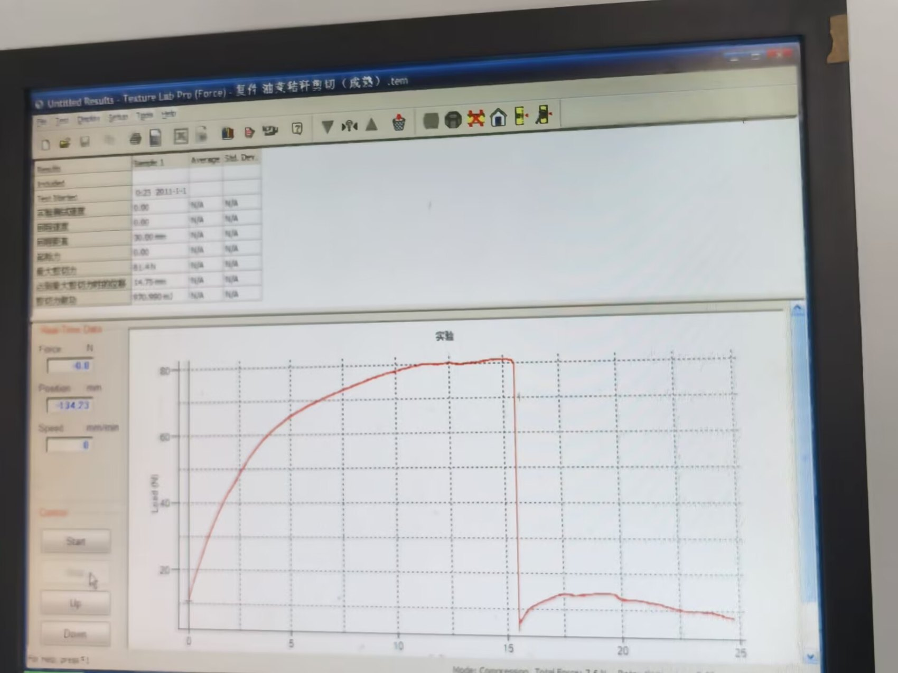
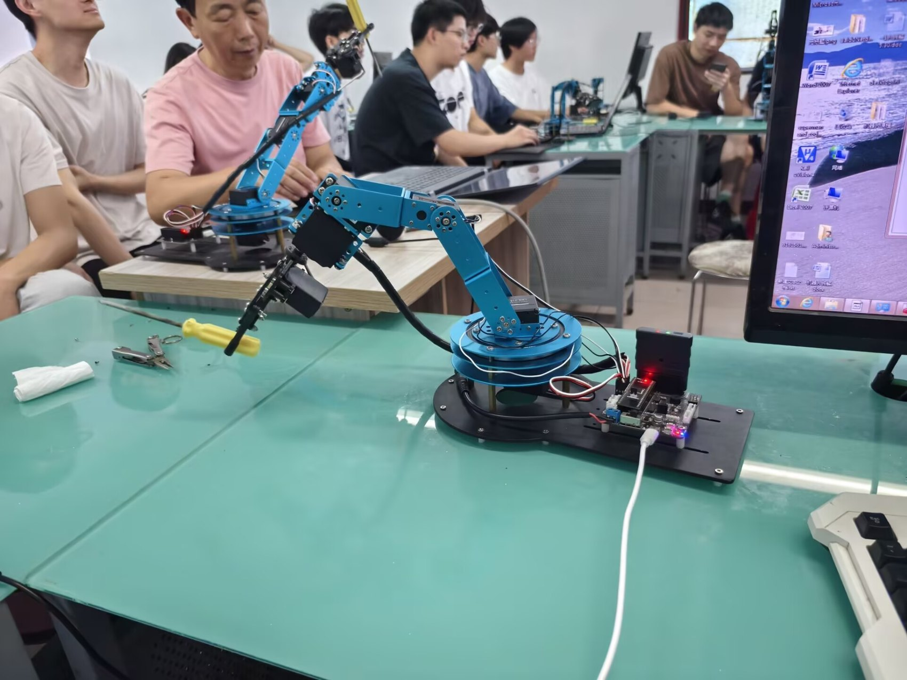
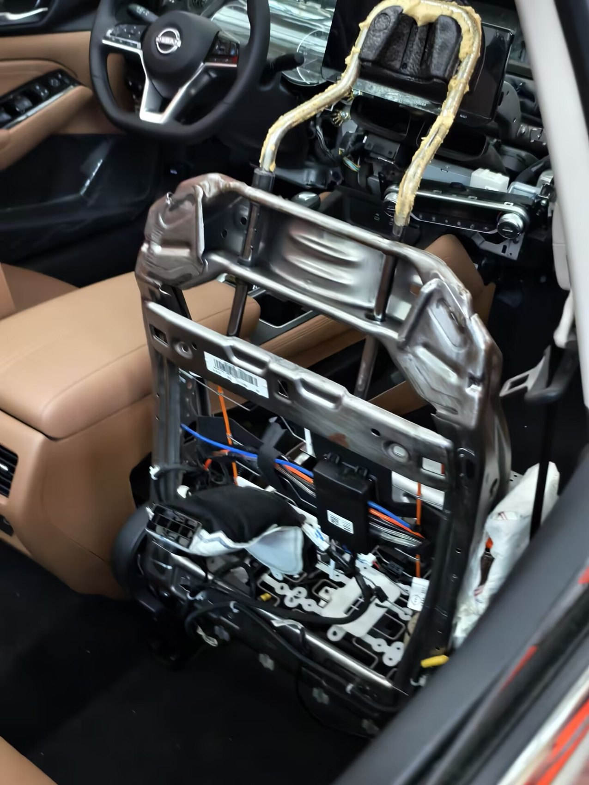
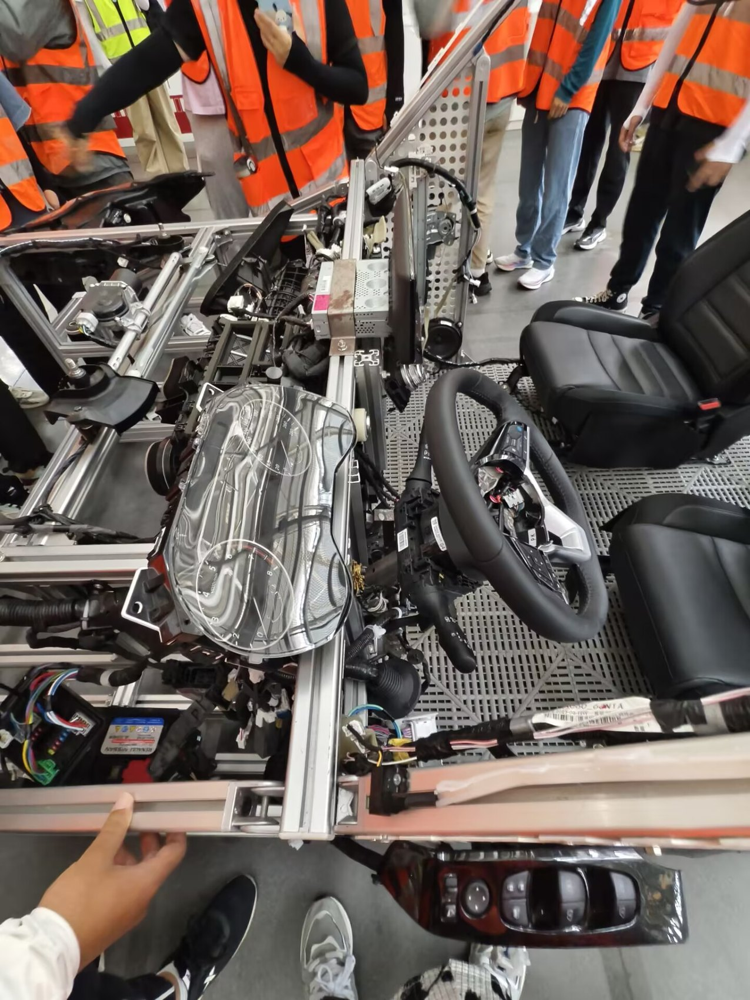

Lab, robotics and automotive exposure
Engineering Practice & Automotive Structure Training
Earlier practical engineering experience covering mechanics testing tools, robotic arm control and automotive structure learning. During the automotive training visit, I also worked as a small-group lead and explained vehicle interior and structural systems to other students.

What This Shows
- Comfort around physical engineering equipment, not only desktop CAD and simulation tools.
- Ability to connect test setup, measured response and engineering interpretation.
- Hands-on curiosity with mechatronic systems, including robotic arm control and basic hardware interaction.
- Automotive structure awareness: seats, trim, wiring, steering area, interior support structures and assembly logic.
- Communication under real site conditions: explaining technical features to a small group rather than only writing reports.
Visual Evidence





How It Supports Internship Work
These experiences add a practical layer to my current portfolio. They support roles that need engineers who can read test data, ask useful questions around fixtures and mechanisms, communicate clearly with a team and understand that products are assembled, tested, serviced and explained by real people.